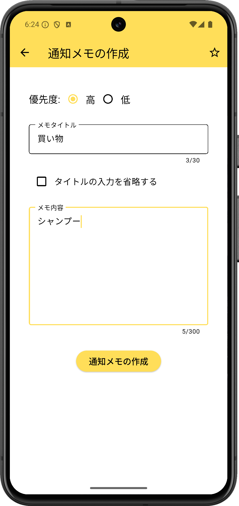
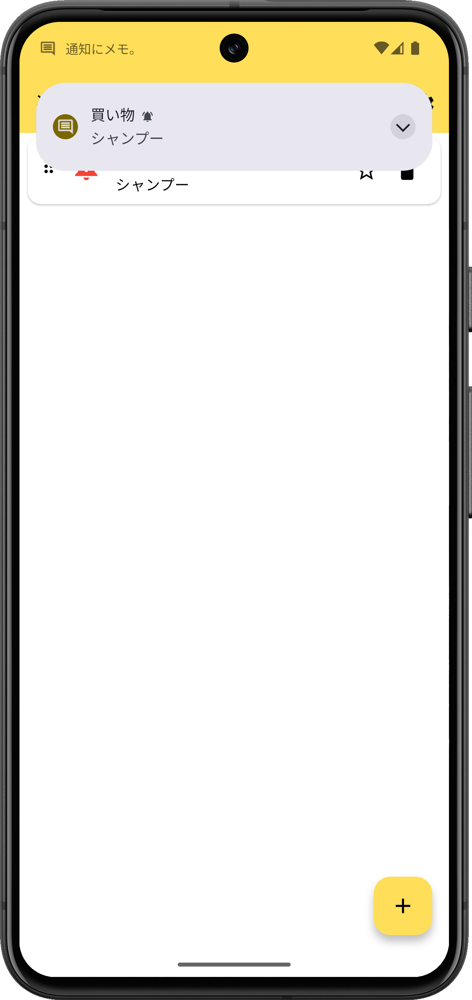
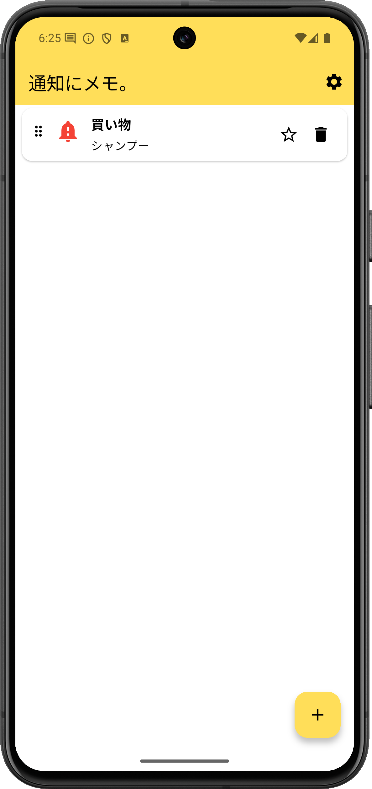

明日ごみ出し
朝に思い出したいこと
寝る前に気づいた用事を通知へ。翌朝スマホを見たタイミングで思い出せます。
Notification Memo
「あとでやる」を、いつもの通知画面に置いておけるメモアプリです。スマホを見るたび自然に目に入るから、うっかり忘れを減らせます。


Problem
大事なのは、どこに書くかよりも、どこなら自然に目に入るか。通知にメモ。は、思い出したいことを通知領域に残して、スマホを開くたびに気づける状態を作ります。
How It Works
アプリを開いて、思い出したことをそのまま入力。タイトルなしでも使えます。
ボタンひとつで通知領域へ。いつものスマホ操作の中で自然に目に入ります。
用事が終わったら通知を消すだけ。短いメモほど軽く扱えます。
Use Cases
明日ごみ出し
寝る前に気づいた用事を通知へ。翌朝スマホを見たタイミングで思い出せます。
折り返し連絡
移動中や作業中の用事を一時置き。落ち着いた時に通知がきっかけになります。
電球買う
買い忘れや持ち物を短く残せます。メモアプリを整理するほどではない用事に向いています。
Screens
起動してすぐ書ける入力画面、自然に思い出せる通知画面、残したメモを見返せる一覧画面。複雑な操作を増やさず、忘れ防止に集中しています。

FAQ
買い物、折り返し連絡、持ち物、明日の用事など、短く残してあとで思い出したいメモに向いています。
長文整理よりも、通知領域で自然に思い出すための一言メモに向いています。
通知だけでなく、アプリ内の一覧画面から残したメモを見返せます。
フッターからプライバシーポリシーと利用規約を確認できます。
Download
短く書いて、通知に残す。忘れたくないことを、もっと軽く扱えるように。